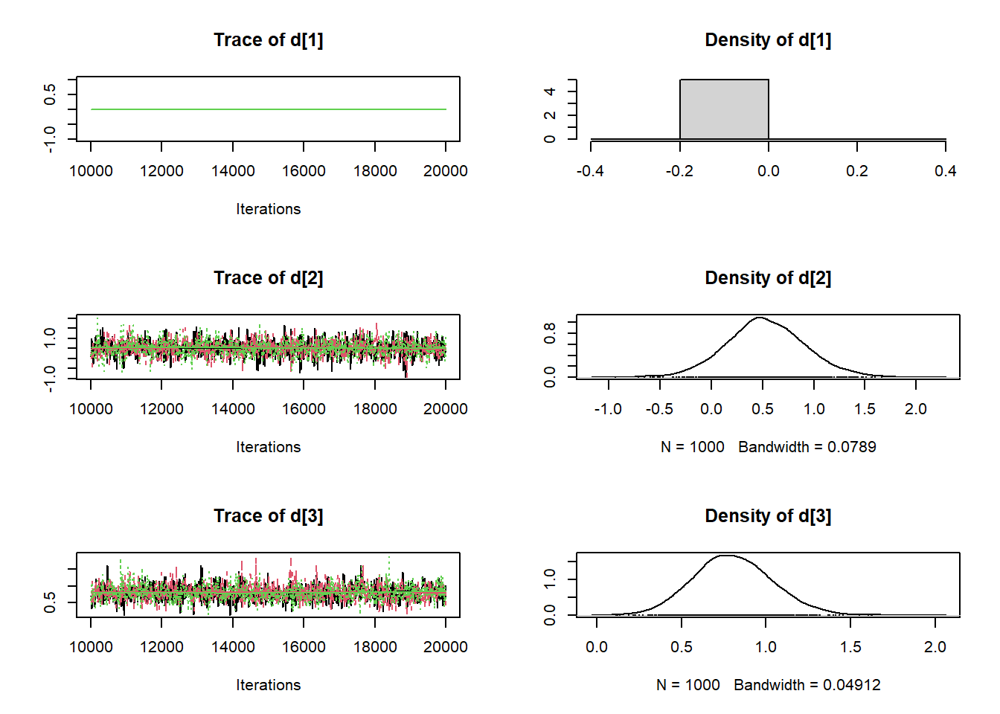

library(tidyverse)## -- Attaching packages --------------------------------------- tidyverse 1.3.0 --## v ggplot2 3.3.3 v purrr 0.3.4
## v tibble 3.1.0 v dplyr 1.0.5
## v tidyr 1.1.3 v stringr 1.4.0
## v readr 1.4.0 v forcats 0.5.1## -- Conflicts ------------------------------------------ tidyverse_conflicts() --
## x dplyr::filter() masks stats::filter()
## x dplyr::lag() masks stats::lag()library(R2jags)## Loading required package: rjags## Loading required package: coda## Linked to JAGS 4.3.0## Loaded modules: basemod,bugs##
## Attaching package: 'R2jags'## The following object is masked from 'package:coda':
##
## traceplotmodel_bnma_fixed <- function(){
for (i in 1:N) {
logit(p[i]) <- mu[s[i]] + d[t[i]] - d[b[i]] # model
r[i] ~ dbin(p[i], n[i]) # binominal likelihood
}
# vague priors for 24 trial baselines
for (j in 1:NS) {
mu[j] ~ dnorm(0, 0.0001)
}
# vague priors for basic parameters
d[1] <- 0
for (k in 2:NT) {
d[k] ~ dnorm(0, 0.0001)
}
}
model_bnma_random <- function(){
for (i in 1:N) {
logit(p[i]) <- mu[s[i]] + delta[i] * (1-equals(t[i], b[i])) # model
r[i] ~ dbin(p[i], n[i]) # binominal likelihood
# random effect distributions of trial-specific LORs
# means of distributions
delta[i] ~ dnorm(md[i], tau)
md[i] <- d[t[i]] - d[b[i]]
}
# vague priors for 24 trial baselines
for (j in 1:NS) {
mu[j] ~ dnorm(0, .0001)
}
# vague priors for basic parameters
d[1] <- 0
for (k in 2:NT) {
d[k] ~ dnorm(0, .0001)
}
# vague prior for RE standard deviation
sd ~ dunif(0, 2)
tau <- 1/pow(sd, 2)
}data_bnma <- tribble(
~s, ~t, ~r, ~n, ~b,
1, 1, 79, 702, 1,
1, 2, 77, 694, 1,
2, 1, 18, 671, 1,
2, 2, 21, 535, 1,
3, 1, 8, 116, 1,
3, 2, 19, 146, 1,
4, 1, 75, 731, 1,
4, 3, 363, 714, 1,
5, 1, 2, 106, 1,
5, 3, 9, 205, 1,
6, 1, 58, 549, 1,
6, 3, 237, 1561, 1,
7, 1, 0, 33, 1,
7, 3, 9, 48, 1,
8, 1, 3, 100, 1,
8, 3, 31, 98, 1,
9, 1, 1, 31, 1,
9, 3, 26, 95, 1,
10, 1, 6, 39, 1,
10, 3, 17, 77, 1,
11, 1, 64, 642, 1,
11, 3, 107, 761, 1,
12, 1, 5, 62, 1,
12, 3, 8, 90, 1,
13, 1, 20, 234, 1,
13, 3, 34, 237, 1,
14, 1, 95, 1107, 1,
14, 3, 134, 1031, 1,
15, 1, 15, 187, 1,
15, 3, 35, 504, 1,
16, 1, 78, 584, 1,
16, 3, 73, 675, 1,
17, 1, 69, 1177, 1,
17, 3, 54, 888, 1,
18, 1, 9, 140, 1,
18, 3, 23, 140, 1,
18, 4, 10, 138, 1,
19, 1, 0, 20, 1,
19, 4, 9, 20, 1,
20, 2, 20, 49, 2,
20, 3, 16, 43, 2,
21, 2, 11, 78, 2,
21, 3, 12, 85, 2,
21, 4, 29, 170, 2,
22, 2, 7, 66, 2,
22, 4, 32, 127, 2,
23, 3, 12, 76, 3,
23, 4, 20, 74, 3,
24, 3, 9, 55, 3,
24, 4, 3, 26, 3
)
s <- data_bnma$s
t <- data_bnma$t
r <- data_bnma$r
n <- data_bnma$n
b <- data_bnma$b
NS <- 24 # 总共纳入24项研究
N <- 50 # 所有研究共50个臂arms
NT <- 4 # 共涉及4种干预jags_dat <- list('s', 't', 'r', 'n', 'b', 'NS', 'N', 'NT')
jags_params <- c("d")bayes.mod.fixed <- jags(data = jags_dat, #inits = inits,
parameters.to.save = jags_params, n.chains = 3, n.iter = 200000,
n.burnin = 100000, model.file = model_bnma_fixed)## module glm loaded## Compiling model graph
## Resolving undeclared variables
## Allocating nodes
## Graph information:
## Observed stochastic nodes: 50
## Unobserved stochastic nodes: 27
## Total graph size: 432
##
## Initializing modelbayes.mod.random <- jags(data = jags_dat, #inits = inits,
parameters.to.save = jags_params, n.chains = 3, n.iter = 200000,
n.burnin = 100000, model.file = model_bnma_random)## Compiling model graph
## Resolving undeclared variables
## Allocating nodes
## Graph information:
## Observed stochastic nodes: 50
## Unobserved stochastic nodes: 78
## Total graph size: 507
##
## Initializing modelbayes.mod.fixed## Inference for Bugs model at "C:/Users/ADMINI~1/AppData/Local/Temp/RtmpyIXLtp/model71007dfc459.txt", fit using jags,
## 3 chains, each with 2e+05 iterations (first 1e+05 discarded), n.thin = 100
## n.sims = 3000 iterations saved
## mu.vect sd.vect 2.5% 25% 50% 75% 97.5% Rhat n.eff
## d[1] 0.000 0.000 0.000 0.000 0.000 0.000 0.000 1.000 1
## d[2] 0.223 0.127 -0.024 0.140 0.225 0.308 0.469 1.002 1500
## d[3] 0.754 0.062 0.639 0.715 0.754 0.793 0.874 1.023 3000
## d[4] 0.830 0.176 0.490 0.714 0.829 0.947 1.173 1.001 3000
## deviance 504.791 248.565 484.356 491.696 496.227 501.525 513.197 1.000 3000
##
## For each parameter, n.eff is a crude measure of effective sample size,
## and Rhat is the potential scale reduction factor (at convergence, Rhat=1).
##
## DIC info (using the rule, pD = var(deviance)/2)
## pD = 30912.8 and DIC = 31417.6
## DIC is an estimate of expected predictive error (lower deviance is better).bayes.mod.random## Inference for Bugs model at "C:/Users/ADMINI~1/AppData/Local/Temp/RtmpyIXLtp/model710010c22612.txt", fit using jags,
## 3 chains, each with 2e+05 iterations (first 1e+05 discarded), n.thin = 100
## n.sims = 3000 iterations saved
## mu.vect sd.vect 2.5% 25% 50% 75% 97.5% Rhat n.eff
## d[1] 0.000 0.000 0.000 0.000 0.000 0.000 0.000 1.000 1
## d[2] 0.520 0.393 -0.273 0.268 0.516 0.777 1.279 1.001 3000
## d[3] 0.813 0.231 0.368 0.657 0.807 0.959 1.285 1.001 3000
## d[4] 1.175 0.459 0.273 0.880 1.164 1.458 2.099 1.002 1700
## deviance 281.804 9.934 264.509 274.769 281.313 288.171 303.243 1.001 2500
##
## For each parameter, n.eff is a crude measure of effective sample size,
## and Rhat is the potential scale reduction factor (at convergence, Rhat=1).
##
## DIC info (using the rule, pD = var(deviance)/2)
## pD = 49.3 and DIC = 331.1
## DIC is an estimate of expected predictive error (lower deviance is better).bayes.mod.fixed.mcmc <- as.mcmc(bayes.mod.fixed)
summary(bayes.mod.fixed.mcmc)##
## Iterations = 100001:199901
## Thinning interval = 100
## Number of chains = 3
## Sample size per chain = 1000
##
## 1. Empirical mean and standard deviation for each variable,
## plus standard error of the mean:
##
## Mean SD Naive SE Time-series SE
## d[1] 0.0000 0.00000 0.000000 0.000000
## d[2] 0.2231 0.12680 0.002315 0.002314
## d[3] 0.7542 0.06242 0.001140 0.001168
## d[4] 0.8296 0.17555 0.003205 0.003070
## deviance 504.7913 248.56475 4.538151 4.539664
##
## 2. Quantiles for each variable:
##
## 2.5% 25% 50% 75% 97.5%
## d[1] 0.00000 0.0000 0.0000 0.0000 0.0000
## d[2] -0.02432 0.1404 0.2247 0.3083 0.4686
## d[3] 0.63868 0.7151 0.7545 0.7931 0.8736
## d[4] 0.49041 0.7138 0.8286 0.9471 1.1734
## deviance 484.35626 491.6959 496.2269 501.5250 513.1969plot(bayes.mod.fixed.mcmc)coda::autocorr.plot(bayes.mod.fixed.mcmc)bayes.mod.random.mcmc <- as.mcmc(bayes.mod.random)
summary(bayes.mod.random.mcmc)##
## Iterations = 100001:199901
## Thinning interval = 100
## Number of chains = 3
## Sample size per chain = 1000
##
## 1. Empirical mean and standard deviation for each variable,
## plus standard error of the mean:
##
## Mean SD Naive SE Time-series SE
## d[1] 0.0000 0.0000 0.000000 0.000000
## d[2] 0.5202 0.3935 0.007184 0.007456
## d[3] 0.8128 0.2307 0.004212 0.004312
## d[4] 1.1748 0.4586 0.008372 0.008370
## deviance 281.8043 9.9342 0.181372 0.181362
##
## 2. Quantiles for each variable:
##
## 2.5% 25% 50% 75% 97.5%
## d[1] 0.0000 0.0000 0.0000 0.0000 0.000
## d[2] -0.2725 0.2680 0.5163 0.7772 1.279
## d[3] 0.3683 0.6566 0.8067 0.9590 1.285
## d[4] 0.2730 0.8803 1.1645 1.4582 2.099
## deviance 264.5094 274.7693 281.3132 288.1706 303.243plot(bayes.mod.random.mcmc)
coda::autocorr.plot(bayes.mod.random.mcmc)